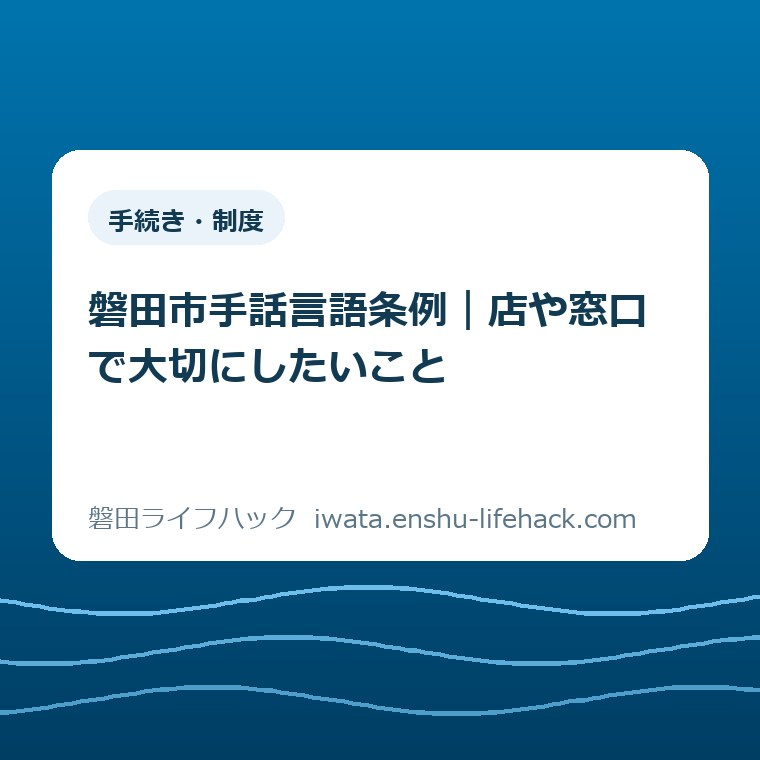

手続き・制度
磐田市手話言語条例｜店や窓口で大切にしたいこと

この記事の要点
Q. 手話ができない店や窓口では、まず何を大切にすればいい？
A. 磐田市手話言語条例は、手話を言語として認め、事業者にも利用しやすいサービス提供などに努める役割を示しています。店や窓口では、本人が希望する伝達方法を一つ確かめることから。筆談でよいと決めつけず、対応や支援制度の利用条件は個別に確認します。2026年9月は駅前と「かたりあ」が別の日程で青色点灯します。
伝える前から、本人と家族の手間は始まっている
聞こえない家族との外出では、行き先を決めるほかに、店でどう注文するか、窓口でどう呼ばれるかを考える手間があります。筆記具やスマートフォンを準備し、説明を繰り返すこともある。その準備をして出かける人に、受け入れる側がさらに説明の負担を重ねてよいのか。この記事は、そこから磐田市手話言語条例を読みます。
必要な配慮や使いやすい伝達方法は、一人ひとり、場面ごとに異なります。市の支援制度を利用できる条件も個別に確認が必要です。「聞こえないなら手話」「文字を見せれば大丈夫」と、外見や同伴者の有無から決めつける話ではありません。
大石浩之（磐田市／不動産業）です。私は、条例を暮らしに移すなら、接客する側の準備から考えたいと思います。本人に工夫をお願いする前に、店や窓口が用意できるものはないか。紙を出す人、説明する人、次の担当につなぐ人を、受け入れる側で決めておくという視点です。
本文の条例と点灯日程に関する事実は、2026年9月21日に確認した磐田市の公表情報によります。接客の言葉や段取りは、その情報を踏まえた私の提案です。市が各店舗に一律の接客手順を指定している、という意味ではありません。
条例は、手話を学ぶ人だけの話ではない
磐田市の「磐田市手話言語条例」ページは、2018年10月11日の制定を案内しています。手話を言語として認め、ろう者が手話で意思疎通する権利や、互いの人格・個性を尊重する考え方を示しています。確認したページの更新日は2026年6月10日です。
同ページの「市民等の役割」には、事業者の役割もあります。ろう者が利用しやすいサービスや、働きやすい環境を整えるよう努めるという内容です。手話を使う本人と学習する人だけでなく、商品やサービスを届ける側にも関係する条例なのです。
市の案内は、見える位置から話しかけること、分かりやすい筆談や身振り、実物を示すことも挙げています。手話通訳者の派遣や養成講座などの取り組みがあり、福祉相談課には専任手話通訳者がいることも記載されています。詳細は市の条例案内で確認できます。
ここで私が立ち止まったのは、条例に事業者の役割が書かれている点です。「手話ができる人に任せる」で話を閉じると、自分の店の受付や呼び出しが検討から抜けてしまう。手話を学ぶことと、目の前のサービスを使いやすくすることを、別々に進められると私は考えます。
ただし、条例の概要だけを読んで、すべての窓口に通訳者が常駐すると判断はできません。必要な日時や相談内容に応じた対応は、市に確かめる必要があります。制度の入口は、当サイトの障がい福祉の案内にも整理しています。
2026年9月の青色点灯は、会場で期間が違う
磐田市の「磐田市手話言語条例関連イベント」は、9月23日の手話言語の国際デーに合わせた青色のライトアップを案内しています。2026年9月18日更新の発表では、駅前と磐田市民文化会館「かたりあ」の点灯期間が異なります。
| 場所・対象 | 期間 |
|---|---|
| 駅前の七重の塔・しっぺいの銅像 | 9月18日（金）～9月25日（金） |
| 磐田市民文化会館「かたりあ」 | 9月22日（火）～9月29日（火） |
9月23日だけの催しではない点が、外出の予定を組むときの注意です。記事公開日の9月21日は、駅前の案内期間内ですが、かたりあの開始日前です。両方の期間が重なるのは9月22日から25日まで。市のページに掲載された期間を見て、行き先と日を組み合わせます。

確認した市の案内本文には、毎日の点灯開始・終了時刻は載っていません。夜ならいつでも見られるとは書けないため、時刻が必要な場合は市の条例関連イベントの公式ページから最新案内を確かめてください。ここでは掲載された期間のみを紹介します。
私には、この青い光は、翌日の接客を考える入口に見えます。見に行く予定がなくても、店の注文表や呼び出し方は見直せます。写真を撮って知る機会にすることと、日常の買い物を使いやすくすることがつながれば、点灯期間が終わった後にも意味が残ります。
良い点——配慮を、個人の親切だけに閉じ込めない
磐田市手話言語条例の良い点は、私は、手話の理解とサービスの使いやすさを同じ話として読めるところにあると考えます。店員個人の善意だけに頼ると、その人が休みの日に同じ対応ができません。事業者の役割として考えるなら、紙の置き場所や確認の言葉を店で共有する話になります。
たとえば、注文を受ける場面を想定します。客が身ぶりで説明し始めてから筆記具を探すのか、店の側から「文字でのやり取りもできます」と見せられるのか。私なら後者を準備したい。客が困っている理由を周囲に説明する前に、選べる方法を提示できるからです。
私は、接客の入口では、背後から声を重ねるより、まず相手がこちらに気づける位置で待つことを提案します。急かすために顔をのぞき込むのでなく、相手がこちらを見て応じる余地を残すということです。
実物を示す方法を接客に取り入れるなら、私は、説明する対象を先にそろえたい。色や大きさを説明するなら、候補を同じ場所に並べ、どれについて話しているかをそろえる。私は、言葉を減らすためでなく、説明の対象を共有するために使いたいと思います。値段や条件の説明は別に必要です。
家族の外出でも、店に任せられるやり取りがあれば、同伴者は同伴者として過ごせます。家族が助けることを否定するのではありません。助けがなければ注文を始められない形を、店の準備で一つ減らせないか。その考え方を持てるところを、私は評価しています。
注文したい点——伝える準備を本人だけの宿題にしない
店や窓口への注文として私が挙げたいのは、希望を聞いた後の準備まで本人任せにしないことです。伝えるための準備を、本人と家族だけの宿題にしてはいけない。「何かあれば言ってください」で待つだけなら、困りごとを説明する仕事まで相手に渡しています。
これは、磐田市の窓口や特定の店が対応していないという報告ではありません。確認した公式資料から、各現場で何ができているかまでは分かりません。私が自分の商売にも向ける注文です。方法を尋ねたら、店の道具や担当者で何を準備するかまで引き受けたいと思います。
もう一つ避けたいのは、筆談の用意をしたことを理由に、手話を希望する人にも文字だけで進めてもらうことです。準備した道具は選択肢であって、相手の希望を封じる条件ではない。伝わっていないと分かった時点で、進め方を変える余地を残す必要があります。
私は、小さな店で、混雑時にどこまで対応を組めるかには迷いがあります。全員がすぐ手話を覚えられるとは言えません。それでも、「今できる方法」と「確認が必要な方法」を分けて説明することは考えられます。できない理由を長く述べる前に、次に誰が何を確認するかを短く示したいのです。
たとえば別の担当に引き継ぐなら、本人の了解を得て、希望する伝達方法と途中まで決まった内容を渡す。担当が替わるたびに、最初から同じ説明を求めないためです。ただし、不要な個人情報まで共有することは、私の提案には含みません。
店で使う言葉は、方法と内容を分けて短くする
店頭のやり取りでは、私は、最初に伝達方法を確かめ、次に注文や相談の内容に入る順序を提案します。「どの方法だとお話ししやすいですか。文字でのやり取りなど、ご希望はありますか」という短い文を、相手が読める形で示すところからです。

文字を使うことで合意できたら、一枚の紙に説明を詰め込まず、一つの問いから始めると扱いやすくなります。たとえば「持ち帰りですか、店内ですか」を先に示し、答えを受けてから数量や受け渡しに進む。これは接客例であり、本人が別の進め方を望む場合は合わせます。
金額は、合計だけでなく、何に対する金額かをそろえて示したいと私は考えます。「こちらが追加分です」では、指している対象がずれることがあります。商品名と数量、追加になる内容を同じ紙面に置き、注文を確定する前に見直せるようにする提案です。
画面を使う場合も、スマートフォンを相手が持っていることを前提にしません。店が見せる画面なら、相手の側から読める向きにします。自動で文字にする機能を使う場合は、店員が内容を読み直し、特に金額や日時を別に確認する運用がよいと私は考えます。
受け取りの呼び出しは、注文の説明とは別に確かめたい部分です。やり取りが文字で済んでも、最後に声だけで呼んだら受け取りが止まるかもしれません。「できあがったら、どのようにお知らせしますか」と本人に確かめ、店が実際にできる方法で約束するのが私の提案です。
確認を終えるときは、相手にただ「分かりましたか」と尋ねるより、店側が「注文はこれ、受け取りはこちら」と整理して見せたい。うなずきだけで細かな条件まで合意できたと扱わず、訂正や質問を入れられる間を置きます。理解を試すのではなく、説明した側が内容を確かめる時間です。
家族と窓口へ行くときも、話の中心は本人に置く
聞こえない家族と窓口に行く場合、私は、同伴者がどこまで説明を手伝うかも本人に確かめることを勧めます。店員や担当者から質問されたからといって、すぐ代わりに答える必要はありません。本人が伝える時間を取り、手伝ってほしい部分を聞くという考え方です。
同伴者が相談内容を知っている場面でも、本人がその場で尋ねたいことまで同じとは限りません。受付では本人に向けて質問してもらい、家族の補足が必要なときに加える。私は、家族が話す順序を少し後ろに置くだけでも、誰の相談なのかを見失いにくくなると考えます。
書類を見ながら説明を受けるなら、指している欄と話している内容を一つずつそろえる方法を提案します。説明中に別の用紙へ進まれると、確認したかった箇所が残ることがあります。「この欄の確認が終わってから次へ」と伝えられるよう、急いで書き終えることを目標にしないでください。
市の相談支援を使いたい場合は、手話通訳者の派遣などについて、利用条件や相談方法を市へ確認します。制度があることと、希望する日に利用が決まることは別です。対象、必要な手続き、当日の対応はこの条例紹介だけで確定できません。相談先の入口は障がいに関する相談の案内からもたどれます。
市役所と支所のどこへ向かうかは、伝達方法とは別の確認です。近い支所で扱える用件なのかを調べるときは、磐田市の4支所と窓口を整理した記事も参考にしてください。窓口の場所が分かっても、通訳対応まで決まったと受け止めず、希望する方法を担当へ伝える必要があります。
対案・結論——今日は希望する伝達方法を一つ確かめる
磐田市手話言語条例を暮らしに生かすため、今日の一歩は「本人が希望する伝達方法を一つ確かめる」に絞ります。店なら接客の最初に、家族なら次の外出を話すときに尋ねます。手話を使うかどうかを先に判定するのでなく、どうやり取りしたいかを本人に確かめる一歩です。
声で問いかけるだけでは届かない場面も考え、短い文字を見せるなど、本人が受け取れる形で尋ねます。答えを急がせず、紙や画面を指して選ぶ方法も示す。方法を選ぶためのやり取り自体が難しいときは、分かったふりで内容の説明へ進まないことを、私は勧めます。
希望が分かれば、店側はできることを準備し、確認が必要なら誰が調べるかを決めます。家族は、本人が選んだ方法を外出先に伝える手伝いが必要かを確かめる。ここから先の役割を具体的にするためにも、最初の希望を推測で埋めないことが出発点になります。
一度確かめた方法を、その人にずっと固定する必要はありません。短い買い物と詳しい相談では、必要なやり取りが違います。記録する場合も本人の了解を得て、次回は希望が変わっていないかを確かめる。私は、確認の手間を減らすことと、選び直す余地を残すことを両立させたいと思います。
大石の視点——設備だけでなく、やり取りの段取りを見る
私は不動産業に携わる者として、店や窓口の使いやすさを考えるとき、入口や机だけで終わらせたくありません。以下は実際の相談談ではなく、私の考えです。座る場所があっても、説明を受ける方法が合わなければ、用事は進まない。空間とやり取りを同じ場で考えたいのです。
たとえば自分が説明する側なら、資料を見せる机の上に、書く場所が残っているかを気にしたい。本人の顔と資料の両方を見られる配置なのか。紙を出すたびに荷物を動かす形ではないか。大きな改修の話を始める前にも、説明のために使う場所を考える余地があります。
どんな準備なら十分なのか、私には一律の答えはありません。本人の希望を聞かずに「配慮できた」と言い切ることはできない。それでも、相手が伝え直した回数を当たり前に受け流さないことは、自分の商売の基準にできます。条例の言葉を、説明する側の段取りへ戻して読みたいと思います。
青色のライトアップを見る機会があれば、次に店や窓口で交わす一言にも目を向けたい。伝える手間を本人や家族がすでに払っていることを認め、受け取る側も準備する。私は、その積み重ねに、この条例を暮らしの中で読む意味があると考えます。
よくある質問
手話ができない店では、何から始めればよいですか。
まず本人が希望する伝達方法を、短い文字を見せるなど届く形で確かめます。市の条例案内は筆談や身振り、実物を示す方法も紹介しています。ただし、筆談を全員に当てはめるのは避けたいところです。店でできる方法と確認が必要な方法を分け、分からないまま注文や手続きを確定させない、というのが本記事の提案です。
聞こえない家族と外出するとき、家族が説明を代わるべきですか。
家族がいつも代わりに説明すると決めず、本人がどこを手伝ってほしいかを確かめることを提案します。店や窓口からの問いは本人に向けてもらい、必要な部分を家族が補足します。市の通訳などの支援を希望する場合は、対象や手続き、希望日の対応を個別に確認してください。同行家族がいることだけで、希望する伝達方法は決まりません。
2026年の青色ライトアップは、いつ、どこで行われますか。
市の2026年9月18日更新の案内では、駅前の七重の塔・しっぺいの銅像は9月18～25日、磐田市民文化会館「かたりあ」は9月22～29日です。9月23日の手話言語の国際デーに合わせた点灯で、会場により期間が異なります。毎日の点灯時刻は確認した案内本文に記載がないため、外出前に市の公式ページで最新情報を確かめてください。
参考にした公式情報
- 磐田市手話言語条例／磐田市（2026年9月21日確認）
- 磐田市手話言語条例関連イベント／磐田市（2026年9月21日確認）

最終確認日：2026-09-21 ／ 本記事は公表情報と執筆者の見解を分けて記載しています。制度・数値・公開状況は変更される場合があります。利用条件や個別の対応は市の担当窓口に相談し、最後は磐田市公式ページでご確認ください。